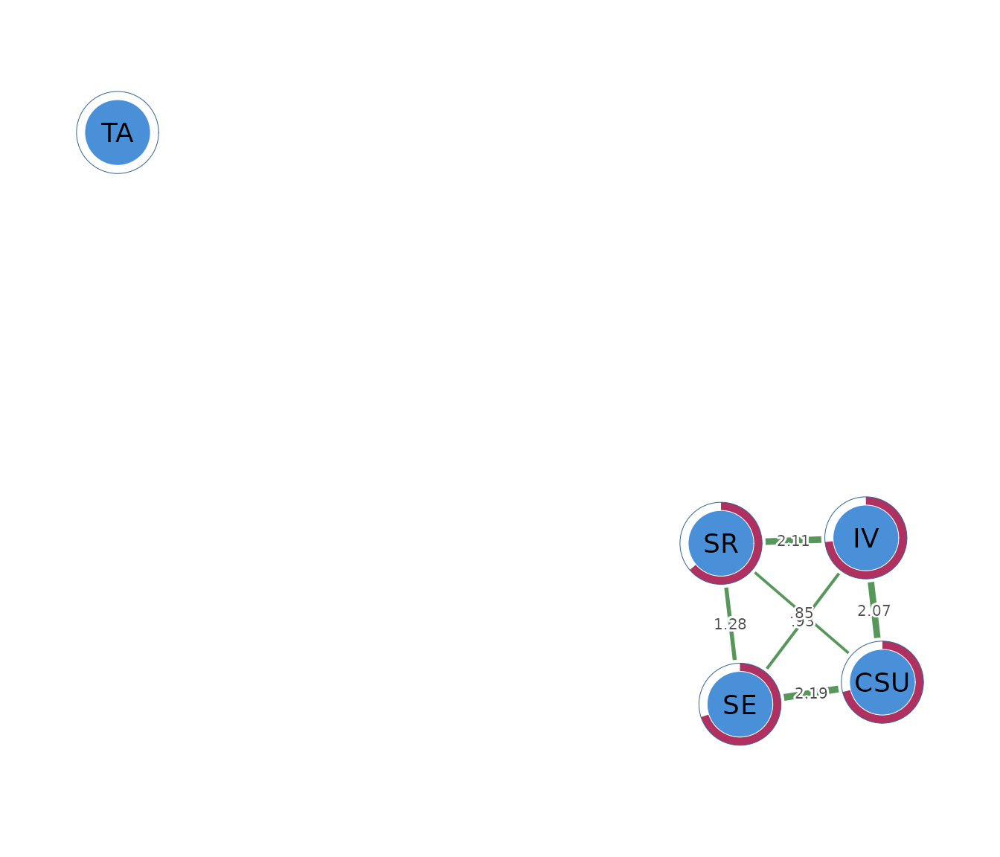

What an Ising network is
An Ising network models the conditional dependence structure among binary variables. Each node represents a variable with two possible states, conventionally coded as 0 and 1, such as the absence or presence of a symptom, failure or success on an assessment, or non-endorsement and endorsement of a questionnaire item. The model estimates the conditional association between every pair of variables while accounting for all remaining variables in the network.
The edge parameters of an Ising model are expressed on the log-odds scale and quantify conditional dependence between binary variables. A positive edge indicates that endorsement of one variable is associated with an increased conditional probability of endorsing the other after adjustment for the remaining variables, whereas a negative edge indicates a reduced conditional probability. For example, in a network of study behaviours, a positive edge between planning and completing assignments indicates that students who report planning are more likely to complete assignments after accounting for their other recorded behaviours. The absence of an edge indicates that the conditional association between two variables is adequately explained by the remaining variables included in the model.
Ising models are particularly appropriate for psychometric and behavioural data that are intrinsically binary, including symptom checklists, diagnostic criteria, pass–fail outcomes, and dichotomously scored questionnaire items. Because the model estimates conditional rather than marginal associations, the resulting network distinguishes direct statistical dependencies from relationships that arise indirectly through other variables. As with Gaussian graphical models, the estimated edges represent conditional statistical dependence and should not be interpreted as evidence of causal relationships.
The data
The worked example uses SRL_GPT, which contains 300
observations on cognitive strategy use (CSU), intrinsic
value (IV), self-efficacy (SE),
self-regulation (SR), and test anxiety (TA).
The original variables are continuous composite scores. An Ising model
requires binary data, so the example uses dichotomize()
with method = "rank" to code the lower half of each score
as 0 and the upper half as 1.
head(binary_data)
#> CSU IV SE SR TA
#> [1,] 0 0 0 0 1
#> [2,] 1 1 1 1 1
#> [3,] 1 1 1 1 0
#> [4,] 0 1 1 0 1
#> [5,] 0 0 0 0 1
#> [6,] 0 0 0 0 0The rank rule gives each variable an endorsement rate of 0.50 in these data. Here, a value of 1 means that the observation falls in the upper half of that construct. Dichotomization discards information from the original scale, so it should be used only when a binary research question is substantively justified. Naturally binary variables can be analyzed directly.
Fitting the network with psychnet()
psychnet() estimates an Ising network when
method = "ising". The default AND rule retains an edge when
both nodewise models select it. The function returns a fitted
psychnet object containing the symmetric interaction
weights, node thresholds, and numerical certificate.
ising_net <- psychnet(data = binary_data, method = "ising", rule = "AND")
ising_net
#> <psychnet> ising network
#> nodes: 5 edges: 7 (undirected)
#> optimality (KKT residual): 3.74e-10The fitted network contains 5 nodes and 7 edges. Three of the ten possible pairs are removed by the selected model.
Inspecting interactions with summary()
summary() prints the fitted network and returns the edge
table invisibly. The columns from, to, and
weight identify the retained interactions. Positive weights
indicate higher conditional odds of joint endorsement. Negative weights
indicate lower conditional odds.
summary(ising_net)
#> <psychnet> ising network
#> nodes: 5 edges: 7 (undirected)
#> optimality (KKT residual): 3.74e-10
#> edge weight: range [-0.347, 2.242], mean 1.347The six retained edges among CSU, IV,
SE, and SR are positive. The largest is
IV-SR at 2.242, followed by
CSU-SE at 2.188. Students in the upper half of
one construct have higher conditional odds of being in the upper half of
the connected construct after the other binary variables are
considered.
The SR-TA edge is negative (-0.347).
Upper-half self-regulation is associated with lower conditional odds of
upper-half test anxiety after cognitive strategy use, intrinsic value,
and self-efficacy are taken into account. Test anxiety has no other
retained edge in this model.
Ising weights are logistic interaction coefficients, not correlations. Their magnitudes should therefore be interpreted on the model’s log-odds scale and compared within the fitted network.
Checking numerical optimality with certificate()
certificate() reports the largest stationarity residual
across the fitted nodewise logistic models. It returns
method, certificate, kind, and
certified. A small residual indicates that the optimization
satisfies its first-order conditions to the requested tolerance.
certificate(ising_net)
#> method certificate kind certified
#> 1 ising 3.74261e-10 kkt TRUEThe residual is
and certified is TRUE. This value is close to
machine precision and indicates that the penalized logistic fits satisfy
their numerical conditions to numerical precision. The certificate
checks optimization, not sampling stability, measurement validity, or
causation.
Describing node position with net_centralities()
net_centralities() returns node,
strength, and expected_influence by default.
Strength sums the absolute interaction weights. Expected influence sums
the signed weights, so negative connections reduce the total.
net_centralities(ising_net)
#> node strength expected_influence
#> 1 CSU 4.9459597 4.9459597
#> 2 IV 5.3057980 5.3057980
#> 3 SE 4.7737358 4.7737358
#> 4 SR 4.8683790 4.1747307
#> 5 TA 0.3468242 -0.3468242Intrinsic value has the highest strength (5.306), followed by cognitive strategy use (4.946). Self-regulation has strength 4.868 and expected influence 4.175 because its negative connection with test anxiety reduces the signed sum. Test anxiety has one edge, giving strength 0.347 and expected influence -0.347.
These indices describe connection patterns in the estimated binary network. They do not show which construct should be targeted by an intervention.
Evaluating binary predictability with
net_predict()
net_predict() evaluates how accurately each node is
classified from the others. Binary nodes use normalized classification
accuracy (nCC). An nCC of 0 means that
prediction is no better than always choosing the more frequent category.
An nCC of 1 means perfect classification. The
accuracy column reports the unadjusted proportion
classified correctly.
net_predict(ising_net, data = binary_data)
#> node type metric predictability accuracy
#> 1 CSU binary nCC 0.7066667 0.8533333
#> 2 IV binary nCC 0.7266667 0.8633333
#> 3 SE binary nCC 0.7000000 0.8500000
#> 4 SR binary nCC 0.7133333 0.8566667
#> 5 TA binary nCC 0.0000000 0.5000000Intrinsic value has the highest normalized accuracy (0.727) and a raw
accuracy of 0.863. Cognitive strategy use, self-efficacy, and
self-regulation have nCC values from 0.700 to 0.713 and raw
accuracies near 0.85. Their neighbours provide substantial
classification information beyond the 0.50 marginal baseline.
Test anxiety has nCC = 0 and accuracy 0.50. Its
neighbour does not improve classification beyond the marginal baseline
in the penalized model. These are in-sample values; assessment on new
observations requires validation data.
Comparing an unregularized Ising estimator
psychnet() fits unregularized nodewise logistic models
when method = "ising_sampler". The argument
alpha = 0.05 removes edges whose Wald tests exceed the
selected level. This comparison checks whether the main structure
persists under a different estimation procedure.
unregularized_net <- psychnet(data = binary_data, method = "ising_sampler", alpha = 0.05)
unregularized_net
#> <psychnet> ising_sampler network
#> nodes: 5 edges: 7 (undirected)
#> optimality (KKT residual): 1.38e-08
summary(unregularized_net)
#> <psychnet> ising_sampler network
#> nodes: 5 edges: 7 (undirected)
#> optimality (KKT residual): 1.38e-08
#> edge weight: range [-0.769, 2.309], mean 1.354The unregularized model retains the same 7 edges. Its positive
learning-cluster interactions are slightly larger, and the
SR-TA edge is -0.769 compared with -0.347 in
the penalized model. The shared structure provides evidence that the
main qualitative pattern is not specific to the penalized estimator. The
change in magnitude reflects the different estimation and pruning
procedures.
certificate(unregularized_net)
#> method certificate kind certified
#> 1 ising_sampler 1.384701e-08 kkt TRUEThe residual is
and certified is TRUE, indicating that the
unregularized nodewise fits satisfy their score conditions within the
default tolerance.
Visualizing the network with cograph::splot()
cograph::splot() draws the network when the optional
cograph package is available. Psychological styling uses
green for positive interactions and red for negative interactions.
Predictability rings summarize node classification.
cograph::splot(ising_net, psych_styling = TRUE, predictability = TRUE)
Node placement is determined by a layout algorithm and has no statistical scale. The edge table remains the primary source for numerical interpretation.
Reporting the analysis
A report should define what 0 and 1 mean for every node, describe any dichotomization rule, state the sample size, estimator, EBIC setting, edge rule, and missing-data procedure, and report interaction weights numerically. Results should be described as conditional associations on a log-odds scale.
The present analysis used rank dichotomization, 300 complete
observations, the EBIC-regularized Ising estimator, and the AND rule.
The model retained 7 edges. The largest interaction was
IV-SR (2.242), and
SR-TA was negative (-0.347). The KKT residual
was
.
An unregularized sensitivity model retained the same edge set.
How the Ising network is estimated
Each binary node is modeled with logistic regression using the remaining nodes as predictors. The regularized estimator applies an penalty and selects a penalty value by EBIC for every node. Small coefficients can be set to zero, which removes the corresponding neighbour from that node’s model.
Each pair receives two estimates because either node can be treated as the outcome. The AND rule retains a pair when both regressions select it and averages the two estimates into one undirected interaction. The OR rule retains a pair when either regression selects it.
Mathematical foundations
For a binary vector , the Ising model is
where is a node threshold, is an interaction, and is the normalizing constant. The conditional model for node is
The regularized estimator minimizes the negative nodewise log-likelihood plus . EBIC selects . The certificate is the largest violation of the penalized logistic stationarity conditions across all nodes.
For binary predictability, normalized classification accuracy is
where is classification accuracy and is the larger marginal class proportion.